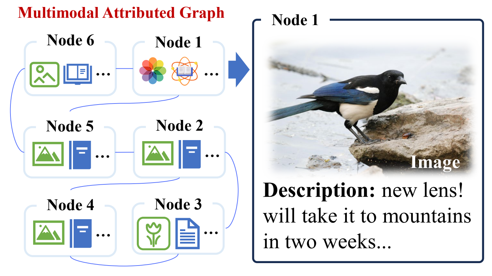
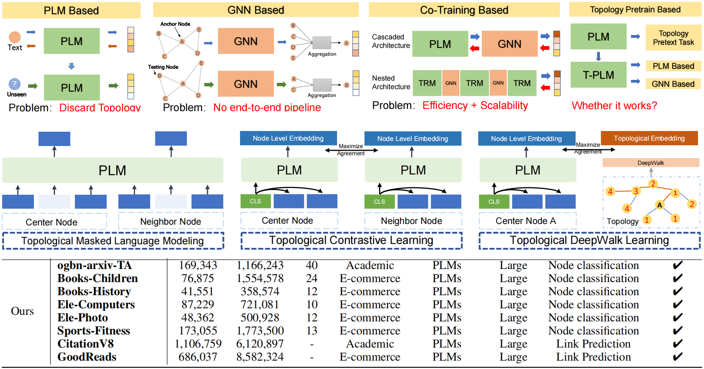
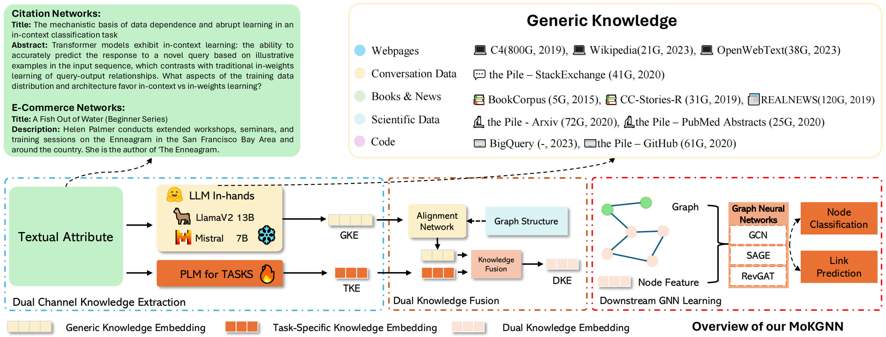
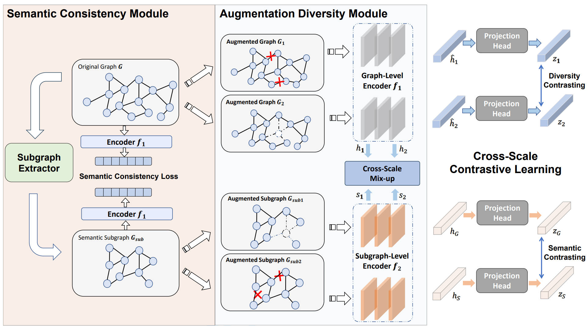
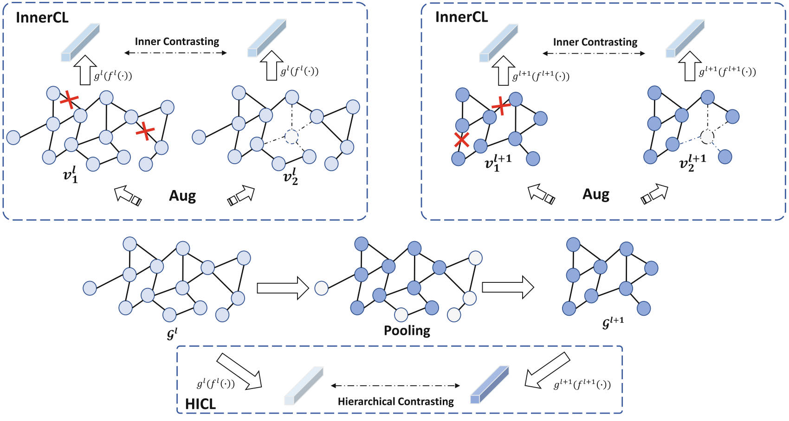

关于我
中南大学
预计2027年6月毕业
我是颜浩（Hao Yan），英文名为 Sherirto。目前是中南大学计算机科学专业博士生，师从 Senzhang Wang 教授，预计于2027年6月毕业。
2025年9月至2026年8月，我参加了香港理工大学博士生联合培养计划，以全额资助科研助理的身份开展研究，接受 Chengqi Zhang 教授的指导。同时，我也接受 Shirui Pan 教授的研究指导。
我于2021年获得合肥工业大学数学与应用数学专业理学学士学位。此前，我曾在微软亚洲研究院社会计算组实习（2022年7月至2023年1月），接受 Chaozhuo Li 的指导；随后在微软 STCA远程实习（2023年2月至2024年1月），接受 Weihao Han 的指导。
我的研究兴趣包括：
- 图表示学习与图—语言模型
- 多模态学习与鲁棒性
- 大语言模型、智能体与大模型推理
- 循环 Transformer 与迭代计算
我正将研究拓展至大模型推理、智能体系统与循环 Transformer 架构。
寻找工作机会。我正在寻找合适的研究助理和算法工程师岗位，关注大语言模型、智能体与推理方向，预计于2027年6月毕业。
第一作者论文
5篇第一作者论文 · 共14篇论文
会议与期刊评级依据 CCF 2026 版目录。


NeurIPS 2023CCF-A
A Comprehensive Study on Text-attributed Graphs: Benchmarking and Rethinking
构建系统性评测基准，比较语言模型与图神经网络在文本属性图上的表现。


WSDM 2025 · 口头报告CCF-B
MoKGNN: Boosting Graph Neural Networks via Mixture of Generic and Task-Specific Language Models
融合通用语言模型与任务专用语言模型，提升文本属性图的表示学习能力。


ACM TKDD 2025CCF-B
Have Our Cake and Eat It: Augmentation Diversity and Semantic Consistency Balanced Graph Contrastive Learning
结合语义子图提取与跨尺度混合增强，平衡语义一致性和数据增强的多样性。


更多论文 9篇合作论文
ICML 2026 · 已录用CCF-A
Rel-MOSS: Towards Imbalanced Relational Deep Learning on Relational Databases
ICLR 2026CCF-A
Paradigm Shift of GNN Explainer from Label Space to Prototypical Representation Space
WWW 2025 · 口头报告CCF-A
Unleash LLMs Potential for Sequential Recommendation by Coordinating Dual Dynamic Index Mechanism
NeurIPS 2023CCF-A
Train Once and Explain Everywhere: Pre-training Interpretable Graph Neural Networks
AAAI 2023CCF-A
WSiP: Wave Superposition Inspired Pooling for Dynamic Interactions-Aware Trajectory Prediction
ICLR 2023 · 口头报告CCF-A
Learning on Large-scale Text-attributed Graphs via Variational Inference
CIKM 2026 · 已录用CCF-B
PS²: Parameterized Control for Fine-Grained Student Proficiency Simulation
IJCAI 2026CCF-B
One-Turn Knockout: Traceable and Editable Proxy Unlearning under Asymmetric Access Constraints
SDM 2023CCF-B
Adversarial Hard Negative Generation for Complementary Graph Contrastive Learning
研究与实践
在研项目与科研工作流
面向合成工艺设计的科研智能体
基于 MinerU 搭建 PDF 批量转 Markdown 的处理流程，并利用多模态模型生成图表描述。协作开发相关性分析与工艺条件逆向筛选的工具接口及可复用 Skills，设计可视化工作流，支持检查分析步骤与追溯结果。
科研 Skills 与知识工作流
开发可复用的论文学习 Skills，支持文献检索、论文精读与方法演进分析，并在 Obsidian 中组织结构化研究笔记。
教育经历
2021年9月—2027年6月（预计）
中南大学
计算机科学与技术 · 硕博连读
2025年9月—2026年8月
香港理工大学
博士生联合培养 · 获资助科研助理
联合培养导师：Chengqi Zhang 教授；同时接受 Shirui Pan 教授的研究指导。
2017年9月—2021年6月
合肥工业大学
数学与应用数学 · 理学学士
研究经历
2023年2月—2024年1月 · 远程
微软 STCA
研究实习生
主导文本属性图学习的系统性基准评测，以第一作者身份发表 NeurIPS 2023 论文。实习导师：Weihao Han。
2022年7月—2023年1月
微软亚洲研究院
研究实习生 · 社会计算组
实现 GLEM 模型的核心代码，开展大规模文本属性图实验，以共同作者身份发表 ICLR 2023 口头报告论文。实习导师：Chaozhuo Li。
学术服务与技术
担任 NeurIPS、ICLR、ICML、KDD 和 CIKM 审稿人（2024—2026年）。
技术实践
使用 Python、PyTorch、PyG、DGL、Git 和 LaTeX，结合可复用 Skills 开展智能体开发与科研工作流实践。
主要荣誉
- 博士研究生国家奖学金 · 2024、2025年
- 中南大学优秀学生 · 2025年
- 中南大学一等学业奖学金 · 2024、2025年
- 微软亚洲研究院“明日之星” · 2023年2月